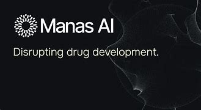
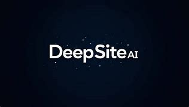
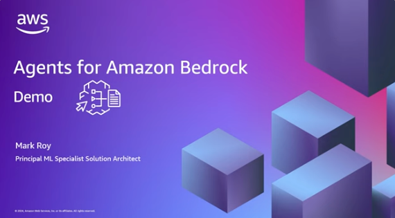
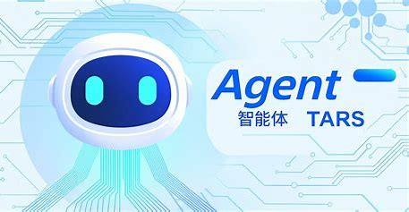
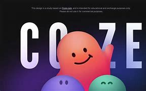
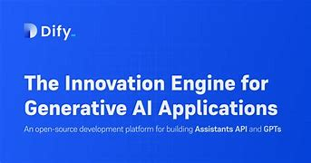
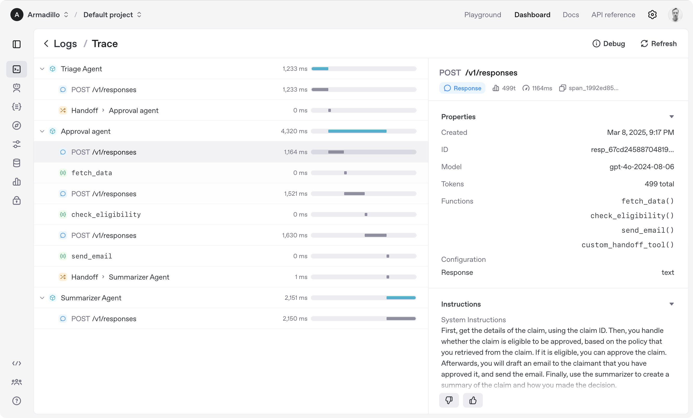

什么是AI Agent？
"Agent是由大模型驱动的自主代理，具备三大核心能力——规划、行动和记忆。"
"Agent是由一种通过传感器感知环境，并通过执行器用于环境的自主实体。"
"Agent是一种能够自主地在环境中行动，以实现目标的计算系统。"
结合定义，AI Agent就是：能够感知环境的、能独立做出决策的、并能主动执行行动的人工智能系统。它可以是软件程序（如聊天机器人、搜索引擎爬虫等）、机器人硬件（如自动驾驶汽车、家用机器人），或是两者的结合。
核心能力
看懂、听懂、理解世界信息。
文本感知能力
最初，单纯的大语言模型，靠海量的文本数据训练出来的，基础的感知方式就是接受用户输入的文本。
间接多模态感知
利用OCR等工具，将图片/PDF转化为文本输入给大模型。
视觉感知能力
2023年OpenAI GPT有了Vision版本，开启了多模态的初阶状态。这个时候再输入图片，它就是可以直接理解图片上的所有信息。
端到端视觉感知
2024年OpenAI GPT发布4o，将图片/声音等多模态数据喂给大模型，端到端训练，能理解和识别声音中的语气语调，和图片细节信息等。甚至能够很好识别视频时序多模态模型。
制定策略，分解任务，思考步骤。
初步规划能力的萌芽
Chain of Thought (CoT)与Tree of Thought (ToT)思维链和思维树技术让大模型具备了基础推理能力。
多工作流和智能体架构
Multi Agent框架出现，类似扣子和Dify平台，让多个智能体协作完成复杂任务。
专门推理模型
OpenAI的O1和R1让大模型内化自主推理过程，在回答问题前有了思考的能力。
端到端训练的"模型即Agent"
Deep Research背后的o3模型自主决定何时搜索信息、整理信息和深度分析，实现了端到端的Agent能力。
控制和操作外部工具，执行任务。
基础调用方式
Function Calling大模型函数调用，例如现在扣子平台上的API工具调用，实现了基础的行动能力。
更复杂的行动
Anthropic的computer use训练大模型从视觉上看懂电脑屏幕，实现点击和操作电脑的功能。
开源Browser Use
通过网页自动化工具让模型操作浏览器，包括Manus操作网页的技术以及OpenAI的Operator。
模型上下文协议
Anthropic的MCP（模型上下文协议）统一了工具调用接口，就像多孔Type-C转接头，让工具接入更标准化。
存储和回忆信息，保持连续性。
短期记忆
通过增加上下文长度来提升模型的短期记忆能力，让模型能记住更长的对话历史。
外部知识库检索
RAG(检索增强生成)将知识存储在外部数据库，需要时再去查找相关内容，像给大模型增加外挂，避免幻觉问题。
先进记忆机制
新的注意力机制研究，如Deepseek的NSA（洗漱注意力机制），专门解决模型的长期记忆问题。
发展现状 - 从实验到应用
早期探索
AutoGPT、BabyAGI等项目点燃了热情，展示了潜力。斯坦福小镇等实验性项目为AI Agent的社交与自主决策能力提供了新思路。
优秀项目
编程助手
Cursor、v0.dev 等工具能辅助甚至自主完成编码任务，极大提升了开发效率。
研究与信息处理
Deep research 类Agent能深度调研分析，自动搜索整理信息，并提供有价值的洞见。
任务自动化
智谱AI操控手机的演示，以及谷歌和OpenAI正在研发的更强大自动化Agent，展示了智能体操作数字界面的潜力。
垂直领域
医疗、客服、数据分析等特定行业的Agent也在兴起，为专业人士提供高效辅助。
AI Agent应用
基础大模型工具
不直接属于 AI Agent，但可以作为构建 AI Agent 的基础或组成部分的工具：
AI Agent平台工具
AI Agent 或支持构建AI Agent的平台：

Manus AI
由 Monica 团队开发的全球首款通用 AI Agent，2025 年 3 月发布后引发现象级关注。其核心突破在于 端到端任务执行能力，已实现从规划到成果交付的全流程自动化。
访问官网GenSpark
Genspark.ai 是由前百度高管景鲲（百度前智能生活事业群组总经理）和朱凯华（前小度CTO）创立的通用型AI智能体平台。它最初以AI搜索引擎为核心，现已发展为覆盖多场景任务的"全能型AI助手"。
访问官网
DeepSite AI
由 DeepSeek-V3-0324 提供支持，DeepSite AI 通过简单的文本描述即时生成生产级网站，非常适合个人和企业。只需输入您的需求，AI即可快速生成专业级网站。
访问官网Flowith
Flowith 被描述为 "下一代画布式 AI 创作工具"，突破传统聊天框的单线程交互限制。它结合 二维无限画布、知识图谱引擎 和 智能体协作系统，目标是帮助用户实现 发散思维与结构化输出的高效统一。
访问官网MetaGPT
MetaGPT 是一个多智能体框架，旨在通过模拟软件公司的协作过程来生成软件。MGX 很可能是基于 MetaGPT 框架开发出的具体模型或 Agent，专注于自动化软件开发流程中的某些环节，例如需求分析、代码编写等。
访问官网
Amazon AI
专为浏览器自动化设计的AI智能体平台。只需几行代码，它便可以操作你的浏览器执行任务，适用于各种复杂任务自动化。基于Amazon Bedrock构建，提供强大的企业级可靠性和性能。
访问官网
字节 TARS (字节跳动)
字节跳动开源的 TARS 是一款面向图形用户界面（GUI）自动化的多模态 AI 智能体，其核心目标是通过视觉解析与多工具集成，实现复杂任务的端到端自动化处理。
访问官网
扣子Coze
这是一个国内的低代码/无代码AI应用开发平台，允许用户通过拖拽、配置等方式快速构建各种AI应用，包括具备Agent能力的自动化工作流、对话机器人等。用户可以定义Agent的目标、行为和与其他工具的交互方式。
访问官网
Dify
这是一个开源的LLM应用开发平台，它强调通过可视化界面和灵活的组件来构建基于大型语言模型的应用，其中包括可以自主执行任务、与其他工具交互的AI Agent。Dify提供了Agent所需的核心能力，如记忆、工具使用、规划等。
访问官网
设计/代码垂直领域工具
设计/代码垂直领域AI Agent工具或平台：